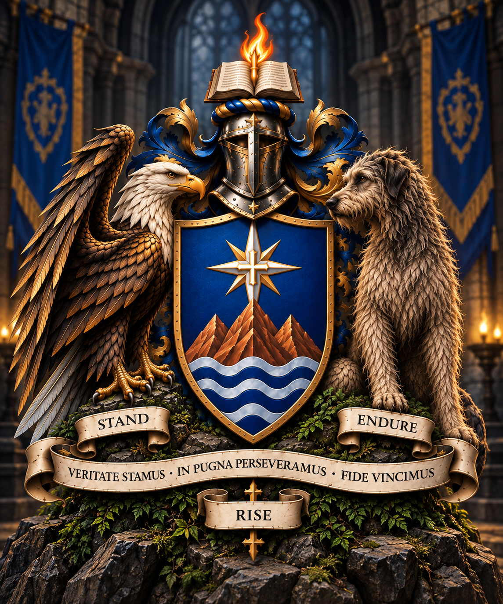

The Heraldry
The arms, supporters, symbols, colors, and words that represent the identity of House Sveitfallas.
Open the heraldic record →THE ARCHIVE OF THE HOUSE

STAND • ENDURE • RISE
VERITATE STAMUS • IN PUGNA PERSEVERAMUS • FIDE VINCIMUS
ENTER THE CHRONICLE ⌄THE HOUSE
House Sveitfallas is the shared family identity of those who bear its name across Azeroth. Its story will be written through the characters, journeys, victories, losses, traditions, and memories created together.
The deeper history of the House will be recorded here as the lore becomes canon.
The arms, supporters, symbols, colors, and words that represent the identity of House Sveitfallas.
Open the heraldic record →A living record of the members who bear the Sveitfallas name and the paths they walk.
View the members →Adventures, milestones, battles, discoveries, and family stories preserved as the House grows.
Read the chronicles →THE HERALDIC RECORD
The principal arms of House Sveitfallas unite the imagery chosen to represent the House. This archive will preserve both the arms themselves and the meaning assigned to each element.
Veritate Stamus
In Pugna Perseveramus
Fide Vincimus
MEMBERS OF THE HOUSE
Nine paths. One House. Individual records will expand as each member's story becomes part of the canon of House Sveitfallas.
Dwarf • Protection Paladin
Mining • Blacksmithing
Record awaiting chronicle.
Skyborne Elf • Mage
Tailoring • Enchanting
Record awaiting chronicle.
Gnome • Priest
Herbalism • Alchemy
Record awaiting chronicle.
Human • Rogue
Engineering • Skinning
Record awaiting chronicle.
Skyborne Elf • Druid
Herbalism • Alchemy provisional
Record awaiting chronicle.
Dwarf • Shaman
Mining • Engineering provisional
Record awaiting chronicle.
Human • Warrior
Mining • Blacksmithing provisional
Record awaiting chronicle.
Night Elf • Hunter
Skinning • Leatherworking provisional
Record awaiting chronicle.
Gnome • Warlock
Tailoring • Enchanting provisional
Record awaiting chronicle.
FROM THE ARCHIVES
Future entries will preserve the adventures and milestones of House Sveitfallas as an ongoing family chronicle.
THE GALLERY
Heraldry, portraits, screenshots, artifacts, maps, and other artwork will eventually be gathered here.